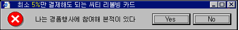
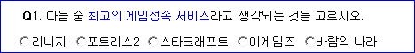

<html>
<head>
<title>자바스크립트 강좌</title>
<meta http-equiv="Content-Type" content="text/html; charset=euc-kr">
<script language="JavaScript">
<!--

var banner_1 =
"<a href='http://rapid00.coco.st' target='_blank'></a>"
var banner_2 =
"<a href='http://simmani.com' target='_blank'></a>"
var banner_3 =
"<a href='http://empas.com' target='_blank'></a>"
var banner_4 =
"<a href='http://lycos.co.kr' target='_blank'></a>"
var banner_5 =
"<a href='http://rapid00.com' target='_blank'></a>"

function random_img(n) { // random메소드에서 넘어온값을 분리하기위한 함수정의

// 매개변수 n의 값에 따라 이미지를 출력합니다.
if( n <= 0.2 ) document.write(banner_1)
else {
if( n <= 0.4) document.write(banner_2)
else {
if( n <= 0.6) document.write(banner_3)
else {
if( n <= 0.8) document.write(banner_4)
else {
if( n <= 1) document.write(banner_5)
}}}}
}

//-->
</script>
</head>
<body bgcolor="#FFFFFF" text="#000000">
<center>
<script language="JavaScript">
<!--
random_img(Math.random())
/* Math.random()은 0부터 1까지의 난수를 발생시킵니다.
이곳에서 발생한 변수를 random_img()함수의 매개변수
n에 값을 전달합니다. */
//-->
</script>
</center>
</body>
</html>